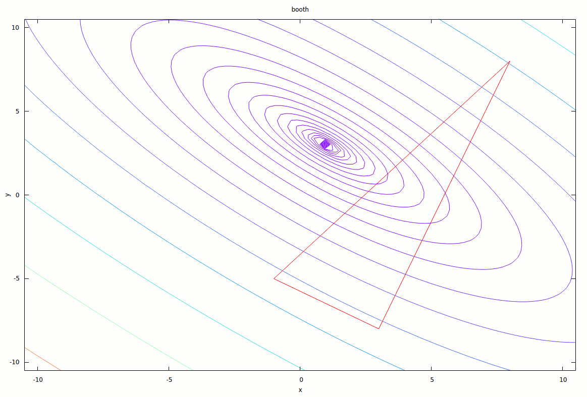
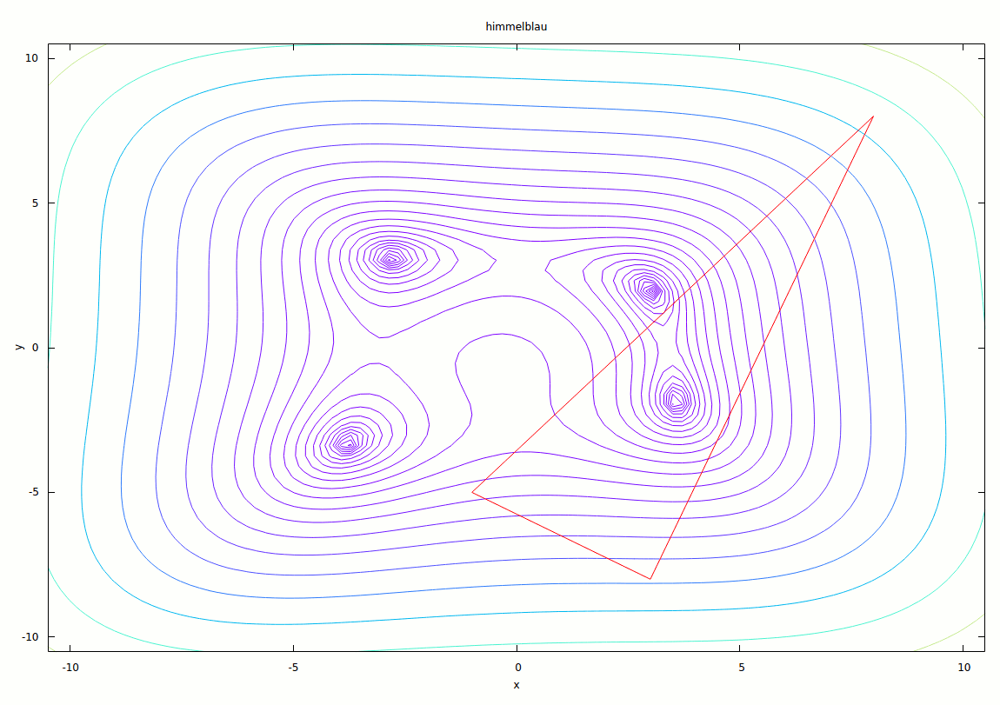

Einführung
Beispiele
 
Implementation
Klassenübersicht
Instanzvariablen
| Variablenname | Beschreibung |
|---|---|
Funktion& f |
zu optimierendes Funktionsobjekt |
point b |
bester Simplexpunkt |
point g |
mittlerer Simplexpunkt |
point w |
schlechtester Simplexpunkt |
double eps |
Epsilon (Kovergenzkriterium) |
double alpha_ |
Reflexionsfaktor |
double gamma_ |
Expansionsfaktor |
double beta_ |
Kontraktionsfaktor |
double delta_ |
Komprimierungsfaktor |
bool done |
Zustandsvariable |
size_t iter_c |
Iterationszähler |
Methoden
| Methode | Beschreibung |
|---|---|
- point& min(point&, point&) |
returniert den kleineren (per Funktionswert) der beiden Punkte |
- point& min(point&, point&, point&) |
returniert den kleinsten (per Funktionswert) der drei Punkte |
- void sort_points_by_fvalue() |
sortiert die drei Werte B, G, W sodass f(B) <= f(G) <= f(W) |
- void do_step() |
führt einen Optimierungsschritt aus |
+ double alpha() |
returniert Reflexionsfaktor |
+ double gamma() |
returniert Expansionsfaktor |
+ double beta() |
returniert Kontraktionsfaktor |
+ double delta() |
returniert Komprimierungsfaktor |
+ void set_alpha(double) |
setzt Reflexionsfaktor wenn möglich, wirft sonst invalid_value |
+ void set_gamma(double) |
setzt Expansionsfaktor wenn möglich, wirft sonst invalid_value |
+ void set_beta(double) |
setzt Kontraktionsfaktor wenn möglich, wirft sonst invalid_value |
+ void set_delta(double) |
setzt Komprimierungsfaktor wenn möglich, wirft sonst invalid_value |
+ point best_point() |
returniert besten Simplexpunkt |
+ std::tuple<point, point, point> current_simplex() |
returniert Tupel aller drei Simplexpunkte |
+ bool done() |
returniert Zustandsvariable |
+ size_t iteration_count() |
returniert den Wert des Iterationenzählers |
+ void step() |
führt Optimierungsschritt aus, sortiert Punkte und setzt ggf. Zustandsvariable |
+ optimize() |
führt die Optimierung die komplette Optimierung durch |
Algorithmus selbst
Die Implementierung umfasst eine Optimiererklasse nelder_mead_optimizer, der bei
der Instanziierung diverse Parameter übergeben werden müssen:
- Eine von der Klasse
Funktionabgeleitete Funktionsrepräsentation, die die Methodevalue(double, double)bzw.operator()(double, double)implementiert haben muss - 3 Startpunkte
p1,p2,p3der Form (x, y), die den Startsimplex konstruieren - Ein Double-Wert
eps, der den zu verwendenden Epsilon-Wert angibt [optional, defaultmäßig .00001] - Ein Double-Wert für den Reflexionsfaktor
alpha[optional, defaultmäßig 1] - Ein Double-Wert für den Expansionsfaktor
gamma[optional, defaultmäßig 2] - Ein Double-Wert für den Kontraktionsfaktor
beta[optional, defaultmäßig .5] - Ein Double-Wert für den Komprimierungsfaktor
delta[optional, defaultmäßig .5]
Alle optionalen Werte können nachträglich mit dem entsprechenden Getter und
Setter abgefragt und geändert werden. Die Setter für die Verhaltensfaktoren
alpha, beta, gamma und delta prüfen die Sinnhaftigkeit der übergebenen
Werte und werfen eine Exception des Typs invalid_value mit einer
Fehlermeldung sollten diese nicht stimmen.
Ein Minimalbeispiel zum Rauskopieren (unter src/nmo/simple.cpp zu finden):
#include <iostream>
#include "nelder_mead_optimizer.hpp"
int main() {
struct : Funktion {
double value(double x, double y) { return x*x + y*y; }
} fn;
nelder_mead_optimizer nmo(fn, {-1, -5}, {8, 8}, {3, -8}, .0005);
nmo.optimize();
point min = nmo.best_point();
std::cout << "The minimum is at " << min.format() << "!\nNeeded "
<< nmo.iteration_count() << " iterations.\n";
}
Vorhergehendes Beispiel instanziiert ein Optimiererobjekt nmo, das die
Funktion fn optimieren soll, mit den Startpunkten (-1, -5), (8, 8) und (3,
-8). Das Epsilon für die Abbruchbedingung wurde als .0005 gewählt. Danach wird
die optimize-Methode aufgerufen, die die Optimierung bis zum Erreichen des
Konvergenzkriteriums durchführt. Anschließend kann der beste Punkt mittels
get_best_point() abgerufen werden. Die point-Klasse liegt der
Implementierung bei und umfasst die wichtigsten Vektor-Operationen sowie einen
extrem coolen Initialisiererlisten-Konstruktor, der die kurze Anschreibweise im
Konstruktoraufruf ermöglicht. Weiters wichtig sind die format- und
raw-Methoden, die den Inhalt des Punktes jeweils in einen String gießen.
format() ist zur schönen Ausgabe gedacht und raw() als Zwischenmedium zur
Weitergabe des Punktes an externe Programme (wie etwa gnuplot).
Um den Algorithmus möglichst flexibel benutzen zu können, kann auch die Methode
step verwendet werden, um den Algorithmus schrittweise verfolgen zu können.
Auskunft über den Zustand gibt die done Methode. Folgendes Beispiel optimiert
eine Funktion wie das vorige, gibt bei jedem Schritt jedoch auch den
derzeitigen Simplex aus.
nelder_mead_optimizer nmo(fn, {-1, -5}, {8, 8}, {3, -8}, .0005);
while(!nmo.done()) {
std::cout << "\nIteration #" << nmo.iteration_count() << '\n';
auto points = nmo.current_simplex();
std::cout << "B = " << std::get<0>(points).format() << '\n'
<< "G = " << std::get<1>(points).format() << '\n'
<< "W = " << std::get<2>(points).format() << '\n';
nmo.step();
}
Testprogramm
Das Testprogramm benötigt POSIX-Pipes (i.e. ist nur auf Linux und ggf. auch OS X lauffähig) und gnuplot zum darstellen des Optimierungsverlaufes. Folgende Funktionen sind vorimplementiert:
- Himmelblau-Funktion (Befehl:
himmelblau) - Rosenbrocks Bananen-Funktion (Befehl:
banana) - Matyas-Funktion (Befehl:
matyas) - Dreihöcker-Kamelfunktion (Befehl:
camel) - Booth-Funktion (Befehl:
booth) - Beale-Funktion (Befehl:
beale) - Beispielfunktion 1,
3*x**2 + y**2 - 3*x*y - 3*x(Befehl:example1) - Beispielfunktion 2,
y**4 + 2*x**2 - 3*x*y + 1(Befehl:example2) - Beispielfunktion 3,
3*x**2 + y + y**2(Befehl:example3)
Ein Aufruf sieht folgendermaßen aus: ./nelder_mead [FUNKTIONSNAME]. Per
default schläft das Programm zwischen Iterationsschritten, um das betrachten
der Ausgabegraphen zu ermöglichen. Ist dies nicht genug, kann via
./nelder_mead [FUNKTIONSNAME] manual erwirkt werden, dass auf eine beliebige
Usereingabe gewartet wird.
Weiters ist eine kleine Informationsfunktion eingebaut. Mittels ./nelder_mead
info [FUNKTIONSNAME] kann diese aufgerufen werden und liefert dann
beispielsweise solche Ausgaben:
$ ./nelder_mead info himmelblau
H I M M E L B L A U function
The Himmelblau function is commonly used for benchmarking optimization
algorithms. It is defined as
2 2 2 2
f(x, y) = (x + y - 11) + (x + y - 7)
Its minima are at positions
f(3.2, 2.0) = 0.0
f(-2.805118, 3.131312) = 0.0
f(-3.779310, -3.283186) = 0.0
f(3.584428, -1.848126) = 0.0
Es werden zumindest die Funktionsdefinition sowie die Minima ausgegeben.
Werden dem Programm keine Argumente übergeben, beschwert es sich dementsprechend und zeigt eine kleine Hilfe mit den unterstützten Funktionalitäten an. Überschüssige Argumente werden ignoriert.